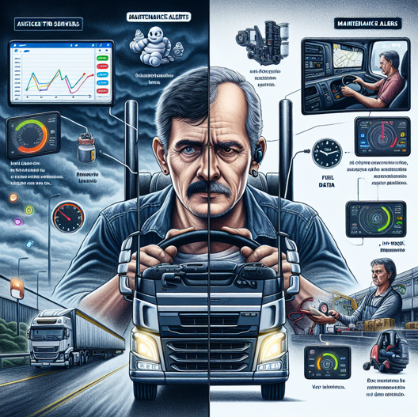
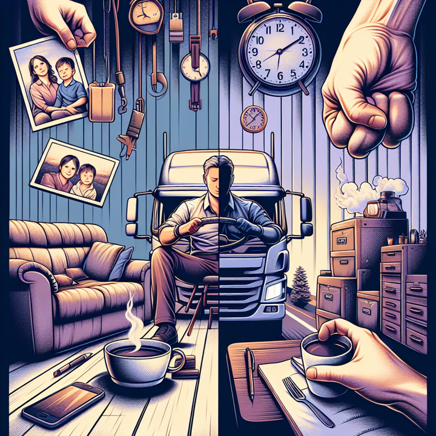

Descrição
O Michelin Connected Companion é uma solução mobile avançada, integrada à plataforma Michelin Connected Fleet, projetada para ajudar caminhoneiros como João Silva a lidar com o sono, monotonia, fadiga e saudades da família. Utilizando inteligência artificial (IA), o aplicativo oferece funcionalidades que melhoram a qualidade de vida dos motoristas na estrada, proporcionando ferramentas práticas, recursos de entretenimento, comunicação e análise personalizada.
Por que Michelin Connected Companion ?
O Michelin Connected Companion é baseado em estudos que mostram que o motorista é continuamente afetado por sono, monotonia, fadiga e saudades da família.Esses fatores aumentam os riscos de acidentes. Nosso produto é centrado na pessoa motorista e foca em atenuar fatores de stress que podem levar a acidentes, proporcionado ao motorista uma jornada com maior qualidade de vida e menores riscos

Funcionalidades Principais com IA
-
Gerenciamento do Sono e Fadiga
- Alertas de Fadiga Baseados em IA
- Sugestões de Descanso Personalizadas
- Diário de Sono Inteligente
-
Quebra da Monotonia
- Entretenimento Curado por IA
- Jogos Interativos com IA
- Desafios e Recompensas Gamificados
-
Conexão com a Família
- Videochamadas e Mensagens com Assistente Virtual
- Compartilhamento de Localização Inteligente
- Álbum de Fotos e Vídeos Automatizado
-
Redução do Estresse
- Planejamento de Rotas com IA
- Alertas Proativos de IA
- Assistente Pessoal Inteligente
Não precisa ser assim
Benefícios
- Melhoria do Bem-Estar
- Aumento da Conectividade
- Engajamento e Diversão
- Maior Segurança
Nossa tecnologia
Driver Drowsiness Detection
Mapeamento da face do rosto

Algoritmo de detecçãode olhos abertos
Usando a nossa tecnologia Driver Drowsiness Detection, basea em mapeamento de imaens do rotos e algoritmos inteligentes que identificam a sonolencia e criam alertas personalisados, como mensagens da família, recomendação de paradas entre outros, o motorista deixa de fazer parte da máquina, mas é visto como um individuo e motivado por meio de personilização. Os dados são enviados para nossa plataforma e recompensas para condução segura e eficiente podem ser implementados aos programas de fidelidade da Michelin e o mesmo pode ser feito com os tomadores de frete e pequenos frotistas. Tudo isso sem usar dispendiosos dispositivos, é apenas criatividade, tecnologia simples e bem planejada tornando o sistema d etransportes mais seguro e eficiente
Com nosso produto a vida do motorista pode ser assim
Benefícios
- Melhoria do Bem-Estar
- Aumento da Conectividade
- Engajamento e Diversão
- Maior Segurança